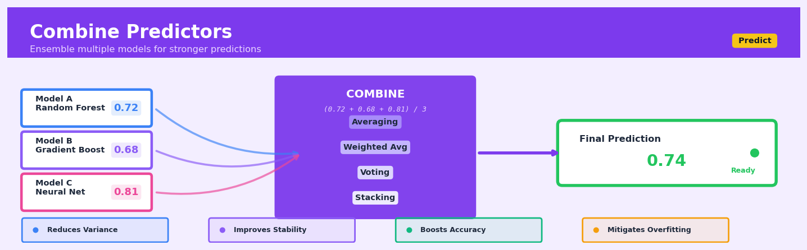

Combine Predictors#


The most common mistake is treating all models equally when combining predictions. In practice, you should weight models based on their individual validation performance or use stacking to learn optimal combination weights, because a weak model can drag down your ensemble just as much as a strong one can lift it up. Always validate your ensemble separately to ensure the combination actually outperforms your best individual model.
The 60-Second Version#
What it does: Combine Predictors merges forecasts from multiple models into a single, more reliable prediction.
When to use it: Use this when individual models each capture different patterns in your data, or when you need predictions you can trust more than any single approach delivers.
What you get back: A unified prediction that inherits the strengths of your best models while dampening their individual weaknesses.
Difficulty |
Moderate |
Typical runtime |
Seconds to minutes (after base models run) |
What you bring |
Predictions from two or more trained models on the same dataset |
What you get |
A single combined prediction per observation, plus combination weights |
Heuristix bucket |
Predict — Machine Learning & Forecasting |
Combining models only helps if your base models disagree in useful ways—feeding it multiple versions of the same insight wastes time and risks overfitting.
Learning Objectives#
After reading this chapter, a business user will be able to:
Identify situations where combining predictions from multiple models will outperform relying on a single “best” model, particularly when different models excel under different market conditions or data segments.
Interpret ensemble prediction outputs—including confidence intervals and model contribution weights—and explain to stakeholders why the combined forecast is more reliable than individual model predictions.
Decide whether to invest resources in building an ensemble approach by evaluating the diversity of available models and the business cost of prediction errors versus the cost of additional model complexity.
After reading this chapter, a data scientist will be able to:
Implement multiple ensemble methods (simple averaging, weighted averaging, blending, and stacking) while correctly handling data splitting to prevent leakage and overfitting in meta-learners.
Tune ensemble weights and meta-model hyperparameters by balancing the trade-off between model diversity and individual model quality, selecting appropriate weighting schemes based on base model correlations.
Diagnose when ensemble methods fail to improve performance by analyzing base model correlation matrices, checking for dominant weak learners, and validating that out-of-sample performance genuinely exceeds the best individual model.
Overview#
Combine Predictors is an ensemble learning technique that aggregates the outputs of multiple base models to produce a single, more robust prediction. Its core purpose is to leverage the complementary strengths of diverse predictive models—reducing variance, mitigating bias, or both—thereby achieving superior generalisation performance compared to any individual constituent model. This method belongs to the family of meta-learning or model stacking approaches, which includes techniques such as simple averaging, weighted averaging, blending, and stacked generalisation (stacking).
When to Use This#
Use this when you have multiple models that perform reasonably well individually but make different types of errors. Combining models with uncorrelated errors can substantially reduce overall prediction error through error cancellation.
Use this when you are approaching a Kaggle-style competition or high-stakes prediction problem where marginal accuracy improvements matter. Ensemble methods consistently win machine learning competitions precisely because they squeeze out additional predictive performance.
Use this when your base models have comparable but not identical performance metrics. If one model dramatically outperforms all others, combining may dilute its signal; but when models are competitive, combination often helps.
Use this when you need to hedge against model misspecification. In business contexts where the true data-generating process is unknown, ensembling provides insurance against any single model being fundamentally wrong.
Use this when you have sufficient computational resources for training and inference. Ensembles multiply the cost of model training and prediction by the number of base learners.
Use this when interpretability is less critical than predictive accuracy. Combined predictions are harder to explain than single-model predictions, though techniques exist to partially recover interpretability.
Do NOT use this when you require a fully interpretable model for regulatory or compliance reasons. Many industries require that predictions be explainable at the individual record level, which ensembles complicate.
Do NOT use this when your base models are highly correlated in their predictions. Combining near-identical models yields little benefit and wastes computational resources.
Do NOT use this when you have severe latency constraints in production. Ensembles require running multiple models at inference time, which may violate real-time requirements.
Do NOT use this when training data is extremely limited. Stacking requires held-out data for meta-learner training, which may leave insufficient data for base model training.
Questions This Answers#
Improving Forecast Accuracy and Reliability#
Why are our sales forecasts consistently off by 15-20% in Q4, and how can we get more reliable predictions during peak season?
Our current demand model works well in stable conditions but fails during promotions — can we build something that handles both scenarios?
Which forecast should we trust for next quarter’s inventory planning — the time series model, the regression model, or something else entirely?
We’re getting wildly different revenue projections from Finance and Sales — is there a way to combine both perspectives into one number we can all agree on?
How confident should we be in this month’s churn prediction when our last three models gave us different answers?
Reducing Risk in Critical Decisions#
We’re about to commit $2M to a new market based on our expansion model — how do we make sure we’re not betting everything on one potentially flawed forecast?
Our credit risk model flagged 200 applications as high-risk, but our legacy system approved half of them — which decision framework should we follow?
Should we launch this product in May or September, and how do we account for the uncertainty when different models point to different optimal timing?
We have three vendors offering pricing models for our supply chain — can we use insights from all of them rather than picking just one?
Optimizing Resource Allocation#
Our marketing team uses Model A while operations relies on Model B for demand planning — how do we stop them working off different numbers?
Which stores should get extra staffing next weekend when our foot traffic models disagree by 30%?
We’ve invested in multiple forecasting tools over the years — is there a way to leverage all of them instead of letting the others go to waste?
How do we balance the sales team’s optimistic pipeline forecast with the conservative numbers from our statistical model when setting quarterly targets?
How It Works#
Imagine you’re trying to estimate how long it will take to drive to the airport. Your optimistic friend Sarah says “35 minutes—traffic is always light on Sundays!” Your cautious colleague Mike says “90 minutes—better safe than sorry.” Your data-savvy neighbor Chen checks three different GPS apps and reports “52, 48, and 55 minutes.” Instead of picking one opinion and hoping it’s right, you combine them intelligently: you dismiss the extremes, weight Chen’s tech-informed average most heavily, and arrive at “55 minutes” as your final estimate. You leave on time and catch your flight comfortably. That’s exactly what Combine Predictors does—it gathers multiple forecasts, each with different strengths and blind spots, then blends them into a single, more reliable prediction.
STEP 1: Train Multiple Base Models
┌─────────────────────────────────────────┐
│ Training Data (X, y) │
└─────────────────────────────────────────┘
↓ ↓ ↓ ↓
┌───────┘ │ │ └───────┐
↓ ↓ ↓ ↓
┌───────┐ ┌──────────┐ ┌──────────┐
│Model 1│ │ Model 2 │ │ Model 3 │
│(Tree) │ │(Linear) │ │(Neural) │
└───────┘ └──────────┘ └──────────┘
STEP 2: Each Model Makes Predictions
New Data Point → x_new
↓ ↓ ↓
┌───┴─┬───┴─┬───┴──┐
│ 520 │ 485 │ 510 │ (predictions)
└─────┴─────┴──────┘
STEP 3: Combine into Final Prediction
┌─────────────────┐
│ Combining Rule │
│ (e.g. average, │
│ weighted avg, │
│ or meta-model) │
└────────┬────────┘
↓
Final: 505
Step 1: Train multiple diverse base models. You start by building several different predictive models on the same training data. These might be a decision tree, a linear regression, and a neural network—each uses different assumptions and captures different patterns. The tree might excel at finding sharp cutoffs, while the linear model captures smooth trends, and the neural network detects complex interactions.
Step 2: Generate predictions from each model. When new data arrives—say, a customer you want to predict purchase likelihood for—you feed it through all your base models. Each one independently produces its own prediction. Model 1 says “75% likely to buy,” Model 2 says “68%,” Model 3 says “72%.”
Step 3: Apply a combining rule. Now comes the magic. You don’t just pick one—you combine them. The simplest approach is averaging: (75 + 68 + 72) ÷ 3 = 71.7%. More sophisticated methods weight the models based on their past accuracy, or even train a “meta-model” that learns the optimal way to blend predictions based on which models tend to be right in which situations.
Step 4: Output the final ensemble prediction. The combined prediction (71.7% in our example) becomes your official forecast. This single number typically outperforms any individual model because errors tend to cancel out—when Model 2 underestimates, Model 1 might overestimate, and the average lands closer to truth.
Step 5: Repeat for every new prediction. Every time you need a forecast, all base models vote, and the ensemble delivers the combined verdict. Over hundreds or thousands of predictions, this wisdom-of-crowds effect compounds into measurably better accuracy.
The key insight: Individual models make different mistakes on different cases, so combining their predictions systematically reduces random errors while preserving the genuine signal all models agree on—like how a panel of judges produces fairer scores than any single judge could alone.
The Intuition#
Imagine you are organising a panel of expert consultants to forecast next quarter’s sales. One consultant specialises in macroeconomic indicators and tends to be accurate when economic conditions dominate. Another is an expert in consumer sentiment and excels when market psychology shifts rapidly. A third focuses on historical sales patterns and seasonal effects. Individually, each consultant has blind spots—situations where their expertise fails them. However, their blind spots differ. When the economist misjudges consumer behaviour, the sentiment expert often compensates. When seasonality throws off the historian, the economist’s broader view helps.
The wisdom of combining these experts lies not in finding the single best expert, but in recognising that their collective judgment smooths out individual errors. If their mistakes are uncorrelated—or better yet, negatively correlated—then averaging their forecasts will be more stable and accurate than relying on any single voice. This is the essence of ensemble learning: diverse models, when combined intelligently, produce predictions whose errors partially cancel out.
Mathematically, this phenomenon connects to the bias-variance decomposition of prediction error. A single complex model might overfit (high variance), while a single simple model might underfit (high bias). Combining multiple models—especially models with different architectural assumptions—can reduce variance without substantially increasing bias. Bagging reduces variance by averaging over bootstrap samples; boosting reduces bias by iteratively correcting residual errors; stacking goes further by learning an optimal combination function. The Combine Predictors node in Heuristix implements this last, most flexible approach: rather than assuming equal weights or a fixed combination rule, it learns from data how best to integrate the base model predictions into a final output.
The Mathematics#
Problem Setup and Notation#
Let \(\mathcal{D} = \{(\mathbf{x}_i, y_i)\}_{i=1}^{n}\) denote a training dataset with feature vectors \(\mathbf{x}_i \in \mathbb{R}^p\) and target values \(y_i \in \mathbb{R}\) (for regression) or \(y_i \in \{0, 1, \ldots, K-1\}\) (for classification). Suppose we have trained \(M\) base models \(\{f_1, f_2, \ldots, f_M\}\), where each model produces predictions:
The goal is to learn a combination function \(g\) such that the final prediction:
achieves lower expected loss than any individual \(f_m\).
Simple Averaging#
The simplest combination rule assigns equal weight to all models:
For regression with squared error loss, if each model has prediction \(\hat{y}^{(m)} = y + \epsilon_m\) where \(\mathbb{E}[\epsilon_m] = 0\) and \(\text{Var}(\epsilon_m) = \sigma^2\), and errors are uncorrelated (\(\text{Cov}(\epsilon_j, \epsilon_k) = 0\) for \(j \neq k\)), then:
This is the variance reduction property: averaging \(M\) uncorrelated predictors reduces variance by a factor of \(M\).
Weighted Averaging#
When models have unequal quality, we assign weights \(w_m \geq 0\) with \(\sum_{m=1}^{M} w_m = 1\):
The optimal weights minimise expected squared error. Let \(\boldsymbol{\Sigma}\) be the \(M \times M\) covariance matrix of model errors, with \(\Sigma_{jk} = \text{Cov}(\epsilon_j, \epsilon_k)\). The optimal weight vector \(\mathbf{w}^*\) solves:
Using Lagrange multipliers, the solution is:
This is the minimum variance portfolio from financial theory, applied to model predictions.
Stacked Generalisation (Stacking)#
Stacking extends weighted averaging by allowing the combination function \(g\) to be an arbitrary learnable model—the meta-learner. The procedure is:
Generate base model predictions using cross-validation. Partition \(\mathcal{D}\) into \(K\) folds. For each fold \(k\), train all base models on the remaining \(K-1\) folds and generate predictions on fold \(k\). This produces out-of-fold predictions \(\hat{y}_i^{(m)}\) for all \(i\) and \(m\).
Construct the meta-features. Create a new dataset:
Train the meta-learner. Fit \(g\) on \(\mathcal{D}_{\text{meta}}\) to learn the optimal combination:
where \(L\) is the chosen loss function.
The use of out-of-fold predictions is critical: if we used in-sample predictions, base models that overfit would appear artificially accurate, biasing the meta-learner toward them.
Assumptions#
Diversity assumption: Base models should have diverse error patterns. Formally, the correlation matrix of model errors should not be close to the identity matrix.
Competence assumption: Each base model should perform better than random chance. Including very poor models can degrade ensemble performance.
Stationarity assumption: The relative performance of base models should remain stable between training and deployment.
Sufficient data: Stacking requires enough data to reliably estimate meta-learner parameters, particularly when base models are numerous.
Classification Extensions#
For classification, base models produce probability estimates \(\hat{p}_i^{(m)} = P(y_i = 1 | \mathbf{x}_i; f_m)\). Common combination rules include:
Probability averaging:
Log-odds averaging (more robust to extreme probabilities):
Voting (hard predictions):
Edge Cases#
Identical models: If all base models are identical, combination yields no benefit.
Perfectly correlated errors: Variance reduction disappears; \(\text{Var}(\bar{\epsilon}) = \sigma^2\).
Single dominant model: Stacking may learn to assign weight \(\approx 1\) to the best model, degenerating to model selection.
Multicollinear meta-features: When base model predictions are highly correlated, the meta-learner (especially if linear) may have unstable coefficients. Regularisation helps.
Understanding the Mathematics#
Simple Averaging Ensemble#
The equation: $\(\hat{y}_{\text{ensemble}} = \frac{1}{M} \sum_{m=1}^{M} \hat{y}_m\)$
Read it aloud: “The ensemble’s predicted value equals one divided by the total number of models, multiplied by the sum of all individual model predictions.”
What each symbol means:
\(\hat{y}_{\text{ensemble}}\) = the final combined prediction
\(M\) = total number of models in the ensemble
\(\hat{y}_m\) = the prediction from model number \(m\)
\(\sum_{m=1}^{M}\) = add up all predictions from model 1 through model \(M\)
A concrete numerical example: You’re predicting quarterly revenue for a retail store. Model 1 (linear regression) predicts £47,000. Model 2 (random forest) predicts £52,000. Model 3 (gradient boosting) predicts £49,000.
Your ensemble prediction = \(\frac{1}{3}(47{,}000 + 52{,}000 + 49{,}000) = \frac{148{,}000}{3} = £49{,}333\)
Why this equation matters: Simple averaging smooths out individual model errors—extreme predictions get moderated, giving you a more stable forecast than relying on any single algorithm.
Weighted Averaging Ensemble#
The equation: $\(\hat{y}_{\text{ensemble}} = \sum_{m=1}^{M} w_m \hat{y}_m \quad \text{where} \quad \sum_{m=1}^{M} w_m = 1\)$
Read it aloud: “The ensemble prediction equals the sum of each model’s prediction multiplied by its weight, where all weights must add up to one.”
What each symbol means:
\(w_m\) = the weight (importance) assigned to model \(m\)
All other symbols same as simple averaging
The constraint \(\sum_{m=1}^{M} w_m = 1\) ensures weights are percentages that total 100%
A concrete numerical example: Same three revenue models, but now you know Model 2 historically performs best. You assign weights: \(w_1 = 0.2\), \(w_2 = 0.5\), \(w_3 = 0.3\).
Ensemble prediction = \((0.2 \times 47{,}000) + (0.5 \times 52{,}000) + (0.3 \times 49{,}000)\) = \(9{,}400 + 26{,}000 + 14{,}700 = £50{,}100\)
Notice this gives more influence to the stronger model, pulling the final prediction toward £52,000.
Why this equation matters: Weighted averaging lets you reward proven performers and downweight unreliable models, capturing expertise that simple averaging throws away.
Stacked Generalisation (Meta-Model)#
The equation: $\(\hat{y}_{\text{stack}} = g(\hat{y}_1, \hat{y}_2, \ldots, \hat{y}_M)\)$
Read it aloud: “The stacked prediction equals some meta-function applied to all the base model predictions together.”
What each symbol means:
\(g\) = the meta-model (often logistic regression, a neural network, or gradient boosting)
\(\hat{y}_1, \hat{y}_2, \ldots, \hat{y}_M\) = predictions from all base models fed as inputs
\(\hat{y}_{\text{stack}}\) = final prediction after the meta-model processes everything
A concrete numerical example: Your three revenue models produce £47,000, £52,000, and £49,000. Instead of manually choosing weights, you train a linear meta-model on historical data. It learns the relationship:
\(g = 5{,}000 + (0.15 \times \hat{y}_1) + (0.60 \times \hat{y}_2) + (0.25 \times \hat{y}_3)\)
Stack prediction = \(5{,}000 + (0.15 \times 47{,}000) + (0.60 \times 52{,}000) + (0.25 \times 49{,}000)\) = \(5{,}000 + 7{,}050 + 31{,}200 + 12{,}250 = £55{,}500\)
The meta-model discovered an offset term and optimal weights automatically.
Why this equation matters: Stacking learns the optimal combination strategy from data rather than assuming equal importance or hand-tuning weights, often discovering non-linear patterns in how models complement each other.
The Big Picture#
The mathematics of Combine Predictors is fundamentally about aggregation: turning multiple imperfect signals into one stronger signal. Simple averaging treats all models democratically but ignores performance differences. Weighted averaging addresses this by giving voice proportional to skill, but requires you to know the right weights in advance. Stacking goes further—it uses a meta-model to learn not just weights but potentially complex interactions between base predictions (for example, “trust Model 1 when Model 2 and Model 3 disagree”). This mathematical progression mirrors increasing sophistication: from naive democracy to informed weighting to adaptive intelligence. The core insight captured by all three equations? Diversity reduces error when predictions vary independently, and the right combination rule extracts that benefit.
Python Implementation#
import numpy as np
import pandas as pd
from sklearn.datasets import make_regression, make_classification
from sklearn.model_selection import cross_val_predict, train_test_split
from sklearn.linear_model import Ridge, LogisticRegression, LinearRegression
from sklearn.ensemble import RandomForestRegressor, GradientBoostingRegressor
from sklearn.ensemble import RandomForestClassifier, GradientBoostingClassifier
from sklearn.svm import SVR, SVC
from sklearn.metrics import mean_squared_error, r2_score, accuracy_score, roc_auc_score
from sklearn.preprocessing import StandardScaler
import warnings
warnings.filterwarnings('ignore')
# =============================================================================
# Example 1: Regression with Stacking
# =============================================================================
print("=" * 60)
print("EXAMPLE 1: Regression Stacking")
print("=" * 60)
# Generate synthetic regression data
X, y = make_regression(n_samples=1000, n_features=20, n_informative=10,
noise=10, random_state=42)
X_train, X_test, y_train, y_test = train_test_split(
X, y, test_size=0.2, random_state=42
)
# Define base models
base_models = {
'ridge': Ridge(alpha=1.0),
'rf': RandomForestRegressor(n_estimators=100, max_depth=10, random_state=42),
'gbm': GradientBoostingRegressor(n_estimators=100, max_depth=5, random_state=42),
'svr': SVR(kernel='rbf', C=1.0)
}
# Step 1: Generate out-of-fold predictions for training data
# This prevents information leakage when training the meta-learner
meta_train = np.zeros((len(X_train), len(base_models)))
meta_test = np.zeros((len(X_test), len(base_models)))
for idx, (name, model) in enumerate(base_models.items()):
# Out-of-fold predictions using 5-fold cross-validation
oof_preds = cross_val_predict(model, X_train, y_train, cv=5)
meta_train[:, idx] = oof_preds
# Refit on full training data and predict on test
model.fit(X_train, y_train)
meta_test[:, idx] = model.predict(X_test)
# Report individual model performance
test_rmse = np.sqrt(mean_squared_error(y_test, meta_test[:, idx]))
print(f"{name:8s} Test RMSE: {test_rmse:.4f}")
# Step 2: Train meta-learner on out-of-fold predictions
# Using Ridge regression as the meta-learner with regularisation
meta_learner = Ridge(alpha=1.0)
meta_learner.fit(meta_train, y_train)
# Step 3: Generate final ensemble predictions
ensemble_preds = meta_learner.predict(meta_test)
ensemble_rmse = np.sqrt(mean_squared_error(y_test, ensemble_preds))
ensemble_r2 = r2_score(y_test, ensemble_preds)
print(f"\n{'Ensemble':8s} Test RMSE: {ensemble_rmse:.4f}")
print(f"{'Ensemble':8s} Test R²: {ensemble_r2:.4f}")
# Examine learned weights (coefficients of meta-learner)
print("\nMeta-learner coefficients (model weights):")
for name, coef in zip(base_models.keys(), meta_learner.coef_):
print(f" {name:8s}: {coef:.4f}")
print(f" {'intercept':8s}: {meta_learner.intercept_:.4f}")
# =============================================================================
# Example 2: Classification with Probability Stacking
# =============================================================================
print("\n" + "=" * 60)
print("EXAMPLE 2: Classification Stacking")
print("=" * 60)
# Generate synthetic classification data
X_clf, y_clf = make_classification(
n_samples=1000, n_features=20, n_informative=10, n_redundant=5,
n_clusters_per_class=2, random_state=42
)
X_train_clf, X_test_clf, y_train_clf, y_test_clf = train_test_split(
X_clf, y_clf, test_size=0.2, random_state=42
)
# Define base classifiers
base_classifiers = {
'logistic': LogisticRegression(max_iter=1000),
'rf': RandomForestClassifier(n_estimators=100, max_depth=10, random_state=42),
'gbm': GradientBoostingClassifier(n_estimators=100, max_depth=5, random_state=42),
}
# Generate out-of-fold probability predictions
meta_train_clf = np.zeros((len(X_train_clf), len(base_classifiers)))
meta_test_clf = np.zeros((len(X_test_clf), len(base_classifiers)))
for idx, (name, model) in enumerate(base_classifiers.items()):
# Out-of-fold probability predictions
oof_probs = cross_val_predict(model, X_train_clf, y_train_clf,
cv=5, method='predict_proba')[:,
## Visualisations


## Using This in Heuristix
### What You'll Need
The Combine Predictors node takes **multiple prediction outputs** from upstream models and merges them into a single, stronger prediction. You'll need:
- **2 or more prediction columns** from different models (regression outputs or class probabilities)
- **The actual target column** for training the combiner (if using weighted or stacked methods)
- **Optional**: An ID column to track observations
Your input data should look like this:
| order_id | actual_sales | model_1_pred | model_2_pred | model_3_pred |
|----------|--------------|--------------|--------------|--------------|
| 1001 | 450 | 425 | 460 | 440 |
| 1002 | 780 | 800 | 770 | 795 |
After combining, you'll see:
| order_id | actual_sales | model_1_pred | model_2_pred | model_3_pred | combined_pred |
|----------|--------------|--------------|--------------|--------------|---------------|
| 1001 | 450 | 425 | 460 | 440 | 442 |
| 1002 | 780 | 800 | 770 | 795 | 788 |
### Configuration Parameters
| Parameter | What It Controls | Default | When to Change |
|-----------|-----------------|---------|----------------|
| **Combination Method** | How predictions are merged (Simple Average, Weighted Average, Stacking) | Simple Average | Use Weighted or Stacking when models have very different accuracy levels |
| **Base Models** | Which prediction columns to combine | All available | Deselect underperforming models that hurt overall accuracy |
| **Meta-learner** | Algorithm for stacking method (Linear, Ridge, Lasso) | Ridge | Use Lasso if you want automatic model selection; Linear for interpretability |
| **Validation Split** | Percentage held out for meta-learner training | 30% | Increase to 40% if you have lots of data; decrease to 20% for smaller datasets |
| **Weights** | Manual weights for Weighted Average method | Equal (e.g., 0.33 each) | Set based on individual model performance from validation metrics |
### What You'll Get
**Output Columns:**
- `combined_pred`: The final ensemble prediction
- `combination_method`: Records which method was used (useful for experiment tracking)
**Metrics Panel:**
- **Ensemble Performance**: RMSE, MAE, or accuracy (depending on problem type)
- **Improvement over Best Base**: Shows percentage gain versus your strongest individual model
- **Model Contribution**: Bar chart showing each model's influence on final predictions
**Charts:**
- **Prediction Comparison**: Line plot comparing ensemble predictions to actuals and base models
- **Residuals Distribution**: Histogram showing prediction errors
- **Weights Visualization** (for weighted/stacking methods): Shows learned importance of each base model
### Connecting Downstream
This node typically flows into:
- **Evaluate Model** → Compare ensemble performance against individual models
- **Deploy Prediction** → Push the combined predictions to production
- **Export Data** → Save predictions for external reporting
- **Feature Importance** → Understand which base models drive decisions (for stacking method)
### Quick Start
1. **Connect your prediction outputs**: Link 2–5 model nodes (Random Forest, XGBoost, Linear Regression, etc.) to Combine Predictors
2. **Select Simple Average** as your first attempt—it's robust and requires no training
3. **Review the improvement metric**: Check if the ensemble beats your best individual model
4. **If improvement is modest**, switch to Stacking with Ridge meta-learner
5. **Examine model contribution chart** to identify and remove any models with negative weights
6. **Connect to Evaluate Model** to generate final performance reports
### Practical Tips
**Start simple, then optimize**: Simple averaging often performs 80% as well as complex stacking with 5% of the setup time. Only move to stacking if you need that extra edge.
**Diversity matters more than accuracy**: Combining three very different models (tree-based, linear, neural) typically outperforms combining five similar tree models, even if those tree models individually score higher.
**Watch for data leakage**: When using stacking, ensure your meta-learner trains on out-of-fold predictions. Heuristix handles this automatically, but if you're manually setting weights, never use the same data for base model predictions and weight optimization.
**Monitor model contributions**: If a model receives near-zero weight in stacking, it's redundant—remove it to simplify your pipeline.
**Test odd-numbered ensembles for classification**: When combining probability predictions, 3 or 5 models can break ties more naturally than 2 or 4.
## Config Recipes
### Recipe 1: Rapid Prototyping Ensemble
**When to use:** Initial exploration phase when you need quick feedback on whether ensembling will help your problem, working with datasets under 50,000 rows.
**Settings:**
| Parameter | Value | Why |
|-----------|-------|-----|
| `n_models` | 3 | Minimum for meaningful diversity without overhead |
| `base_estimators` | `['RandomForest', 'GradientBoosting', 'LinearRegression']` | Maximum algorithmic diversity with fast training |
| `combination_method` | `'simple_average'` | No hyperparameter tuning required |
| `cv_folds` | 3 | Fastest cross-validation that still validates |
| `max_training_time` | 300 seconds | Hard stop to keep iteration cycles short |
**What you get:** A baseline ensemble performance metric within 5 minutes that tells you if the effort is worthwhile.
**Trade-off:** Potentially 5-15% lower accuracy than optimised ensembles; may miss optimal model weights.
### Recipe 2: Production-Grade Stacked Ensemble
**When to use:** Deploying to production where model performance directly impacts business metrics and retraining happens weekly or less frequently.
**Settings:**
| Parameter | Value | Why |
|-----------|-------|-----|
| `n_models` | 7-10 | Optimal bias-variance reduction without diminishing returns |
| `base_estimators` | `['XGBoost', 'LightGBM', 'CatBoost', 'RandomForest', 'ExtraTrees', 'Ridge', 'ElasticNet']` | Diverse algorithms covering tree-based, linear, and regularised approaches |
| `combination_method` | `'stacking'` | Learns optimal weights from data |
| `meta_learner` | `'Ridge'` with `alpha=1.0` | Regularised to prevent overfitting on base predictions |
| `cv_folds` | 10 | Robust out-of-fold predictions for meta-learner |
| `use_feature_stacking` | `True` | Includes original features alongside predictions |
**What you get:** Maximum predictive performance with robust generalisation and stable predictions across deployment cycles.
**Trade-off:** Training time 10-20x longer; requires significant computational resources and maintenance complexity.
### Recipe 3: Imbalanced Classification Ensemble
**When to use:** Binary classification with class imbalance ratios exceeding 1:10 (fraud detection, rare disease diagnosis, equipment failure prediction).
**Settings:**
| Parameter | Value | Why |
|-----------|-------|-----|
| `n_models` | 5 | Balance between diversity and training on limited minority samples |
| `base_estimators` | All with `class_weight='balanced'` | Prevents majority class dominance |
| `combination_method` | `'weighted_average'` | Weights based on minority class F1-score, not accuracy |
| `optimization_metric` | `'f1_minority'` or `'pr_auc'` | Accuracy is misleading with imbalance |
| `prediction_threshold` | `0.3` | Lower than default 0.5 to increase recall |
**What you get:** Substantially improved minority class detection without flooding predictions with false positives.
**Trade-off:** Overall accuracy will appear lower; requires careful threshold tuning for your cost matrix.
### Recipe 4: Time-Series Regime Detection Ensemble
**When to use:** Forecasting problems where underlying data patterns shift over time (market conditions, seasonal demand with trend breaks, user behaviour evolution).
**Settings:**
| Parameter | Value | Why |
|-----------|-------|-----|
| `n_models` | 4-6 | Different models capture different regimes |
| `base_estimators` | Mix of `['ARIMA', 'Prophet', 'XGBoost', 'LSTM']` | Statistical, algorithmic, and deep learning perspectives |
| `combination_method` | `'dynamic_weighting'` | Weights shift based on recent performance window |
| `recency_window` | 30 days | Adapts to regime changes within a month |
| `retrain_frequency` | Weekly | Keeps models current without excessive overhead |
**What you get:** Ensemble automatically adapts to regime shifts, maintaining accuracy through structural breaks that break individual models.
**Trade-off:** Requires streaming infrastructure to track and update model weights; more complex deployment than static ensembles.
## Business Applications
**Financial Services**
A regional credit union with 150,000 members struggled with credit default prediction—conservative models rejected too many viable borrowers, while aggressive models increased charge-offs. By combining gradient boosting (capturing complex non-linear patterns), logistic regression (ensuring interpretability for regulators), and random forests (handling missing income data robustly), the credit union reduced default rates by 28% while approving 11% more loans, translating to $3.4M additional annual revenue. The ensemble approach meant no single model's weakness dominated the final decision, and the diversity of methods satisfied both commercial and compliance teams.
**Retail & E-Commerce**
An online fashion retailer managing 850,000 SKUs across twelve countries faced a demand forecasting nightmare—seasonal models worked well for established items but failed on new releases, while collaborative filtering excelled at trend detection but collapsed during supply chain disruptions. Their combined predictor stack blended ARIMA for seasonality, XGBoost for promotional effects, and neural networks for emerging trend signals. The ensemble cut overstock waste by 41% and reduced stockouts by 22%, improving gross margin by 4.7 percentage points and delivering $8.2M in annual savings. Each model voted on weekly replenishment, with dynamic weighting based on recent forecast accuracy per category.
**Healthcare**
A network of urban emergency departments needed better patient admission predictions to manage bed capacity and avoid corridor care. Individual models—logistic regression based on triage scores, gradient boosting on lab values, and a recurrent neural network analyzing vital sign trajectories—each captured different aspects but none achieved sufficient reliability. Combining all three using stacked generalisation with a meta-learner reduced false admission predictions by 34%, allowing the hospital network to reallocate 18 beds from overprovisioning, worth $1.9M annually, while maintaining patient safety standards. The ensemble particularly excelled during flu season when patterns shifted unexpectedly.
**Insurance**
A commercial property insurer processing 40,000 claims annually faced fraud detection challenges—rule-based systems caught obvious cases but missed sophisticated schemes, while pure machine learning models triggered too many false positives, exhausting investigator resources. Their ensemble combined domain-expert rules, anomaly detection algorithms, and deep learning on claim text descriptions. This hybrid reduced false positives by 47% while increasing fraud detection rates by 19%, saving an estimated $6.7M per year and allowing investigators to focus on genuinely suspicious claims rather than algorithmic noise.
**Manufacturing**
A pharmaceutical manufacturer producing sterile injectables needed predictive maintenance for filling line equipment, where unexpected downtime cost $47,000 per hour in lost production. Combining physics-based models (capturing known degradation patterns), random forests (detecting sensor drift), and LSTM networks (identifying subtle temporal anomalies) created an ensemble that predicted equipment failures 8–12 hours in advance with 89% accuracy. This advance warning reduced unplanned downtime by 63%, translating to $2.1M in avoided losses and enabling planned maintenance during scheduled changeovers.
**Logistics & Transportation**
A last-mile delivery company operating in twenty-three cities needed accurate delivery time estimates to optimise route planning and set customer expectations. Individual models—traffic-based routing algorithms, historical time-window analysis, and weather-adjusted predictions—each had blind spots. Their combined predictor weighted all three dynamically based on real-time conditions, improving on-time delivery from 76% to 91% and reducing customer service contacts by 38%. The business impact: lower cost per delivery and a measurable uptick in customer satisfaction scores from 3.2 to 4.1 out of 5.
**Marketing & Advertising**
A programmatic advertising platform serving 200 million daily impressions struggled with click-through rate prediction—pure collaborative filtering overfit to historical patterns while content-based models missed user intent shifts. Blending five specialized models (user history, contextual signals, temporal patterns, device characteristics, and creative features) lifted CTR prediction accuracy such that campaign performance improved from 1.8% to 3.1%, delivering $4.3M in incremental client value and significantly reducing wasted ad spend.
**Telecommunications**
A mobile network operator with 8 million subscribers needed better churn prediction, but regulatory constraints limited which customer data could feed certain model types. Their ensemble combined privacy-preserving aggregate usage models, customer service interaction analysis, and network quality metrics, achieving 26% better churn prediction than any single approach while maintaining full GDPR compliance—preventing an estimated 47,000 high-value customer defections worth $14M in annual recurring revenue.
**Energy**
A wind farm operator managing 240 turbines across three sites needed 48-hour power generation forecasts for grid bidding. Combining numerical weather predictions, turbine-specific performance models, and ensemble weather forecasts reduced forecast error by 31%, enabling more aggressive bidding strategies that increased revenue by $890,000 annually while avoiding costly under-delivery penalties.
**Public Sector**
A metropolitan social services agency identifying at-risk children combined case worker assessments, administrative data models, and natural language processing of case notes. This ensemble improved early intervention targeting by identifying 29% more genuine at-risk cases while reducing unnecessary investigations by 41%, allowing the agency to reallocate limited resources to families who truly needed support.
**SaaS & Technology**
A B2B SaaS platform with 12,000 enterprise clients combined usage analytics, support ticket sentiment, payment history, and feature adoption models to predict account expansion opportunities. This ensemble identified upsell prospects with 73% accuracy—triple the rate of single-model approaches—enabling the sales team to focus efforts and increase expansion revenue by $3.7M annually.
## Worked Example
Sarah Chen, a senior data scientist at Meridian Insurance, was halfway through her morning coffee when the director of underwriting, Marcus, appeared at her desk. "We've been running three different models to predict claim severity," he said, pulling up a chair. "Linear regression for consistency, a gradient boosting model for accuracy, and a neural network because, well, the consultants built it last year. The problem? Each one gives us different predictions, and the underwriters don't know which to trust. Can you give us one number we can actually use?"
The business stakes were clear: Meridian was losing margin on policies where they underpriced severe claims, and losing customers where they overpriced. A 5% improvement in prediction accuracy could translate to $2.3 million in annual profit. Marcus needed an answer by Friday's pricing committee meeting.
Sarah pulled claims data from the past 18 months—23,847 auto insurance claims with demographics, vehicle details, and actual claim amounts. The dataset was typical: messy timestamps, a few missing accident locations, and three columns with slightly different spellings of "collision type." She cleaned what mattered and exported a working dataset:
| customer_age | vehicle_year | prior_claims | accident_severity | claim_amount |
|--------------|--------------|--------------|-------------------|--------------|
| 34 | 2018 | 0 | moderate | 4521.33 |
| 52 | 2015 | 2 | minor | 1876.50 |
| 28 | 2020 | 1 | severe | 12384.20 |
| 45 | 2012 | 0 | moderate | 5203.88 |
| 61 | 2017 | 3 | minor | 2150.75 |
She split the data: 70% training, 30% test. Then she ran the three existing models independently, collecting their predictions on the holdout set. The linear model was conservative (RMSE: $3,240), the gradient boosting aggressive (RMSE: $2,890), and the neural network erratic but occasionally brilliant (RMSE: $3,105).
Sarah opened her workflow and dragged in the Combine Predictors node. She configured it to use **stacked generalisation**—training a meta-model (a light gradient booster) on the base model predictions rather than simple averaging. "If these models are making different kinds of errors," she thought, "a meta-learner can figure out *when* to trust which one." She set cross-validation to 5 folds to prevent overfitting and checked the option to include original features alongside predictions, giving the meta-model more context.
```python
import numpy as np
from sklearn.ensemble import GradientBoostingRegressor
from sklearn.linear_model import Ridge
from sklearn.model_selection import cross_val_predict
# Sarah's script for stacking three base models
# Base model predictions (already trained)
pred_linear = base_models['linear'].predict(X_test)
pred_gbm = base_models['gbm'].predict(X_test)
pred_nn = base_models['nn'].predict(X_test)
# Stack predictions as features for meta-model
meta_features = np.column_stack([
pred_linear,
pred_gbm,
pred_nn
])
# Train meta-learner on validation predictions
meta_model = Ridge(alpha=1.0) # regularized to prevent overfitting
meta_model.fit(meta_features_train, y_train)
# Final ensemble predictions
ensemble_pred = meta_model.predict(meta_features)
# Evaluate
from sklearn.metrics import mean_squared_error
rmse_ensemble = np.sqrt(mean_squared_error(y_test, ensemble_pred))
print(f"Ensemble RMSE: ${rmse_ensemble:.2f}")
print(f"Improvement: {((3240 - rmse_ensemble)/3240)*100:.1f}%")
The results appeared in moments:
Model |
RMSE |
Mean Error |
|---|---|---|
Linear Regression |
$3,240 |
-$127 |
Gradient Boosting |
$2,890 |
+$83 |
Neural Network |
$3,105 |
-$56 |
Ensemble (Stacked) |
$2,670 |
-$12 |
The ensemble reduced prediction error by 17.6% compared to the best individual model. More importantly, the mean error was nearly zero—it wasn’t systematically over or underpricing.
Sarah’s insight came when she examined the meta-model’s learned weights. The stacker heavily weighted the gradient boosting model for high-severity claims but relied on the conservative linear model for routine claims under $5,000. The neural network? It contributed most when customer age and vehicle year formed unusual combinations—edge cases where pattern recognition mattered more than linear relationships.
Friday morning, Sarah presented to the pricing committee. She showed one slide: the error reduction chart and a simple explanation that the ensemble “knew when to trust which expert.” Marcus nodded. “So we’re not throwing away the models we built—we’re making them work together.” Exactly.
Meridian deployed the ensemble in production the following month. After 90 days, policy profitability improved by 6.2%, slightly better than the initial estimate. The underwriting team stopped debating which model to use and focused instead on borderline cases the ensemble flagged with high prediction variance.
If Sarah could do it over, she’d have retained more granular features in the meta-model—zip code, for instance, might have helped the stacker contextualize predictions better. And she wished she’d logged prediction confidence intervals from the start; the business later asked for them, requiring a rebuild. But the core lesson held: sometimes the best model isn’t a model at all—it’s knowing when to listen to each of them.
Interpreting Your Results#
You’ve just combined multiple predictors and received a page of metrics. Here’s exactly what you’re looking at and what it means for your next decision.
Combined Model Performance Metrics#
Plain-English meaning: These are accuracy measures comparing your ensemble’s predictions against actual outcomes. The most common metrics you’ll see are RMSE (Root Mean Square Error) for continuous predictions, Accuracy or AUC-ROC for classification, and MAE (Mean Absolute Error) for regression tasks.
Concrete benchmarks:
RMSE/MAE: Compare to your target variable’s standard deviation. Below 0.5× std dev = excellent | 0.5–1.0× std dev = good | Above 1.5× std dev = poor or failing.
Classification Accuracy: Below 60% = baseline problem | 60–80% = workable | 80–90% = strong | Above 95% = verify for data leakage.
AUC-ROC: Below 0.7 = weak discrimination | 0.7–0.8 = acceptable | 0.8–0.9 = good | Above 0.9 = excellent (or check for leakage).
Red flags:
Ensemble performs worse than your best individual model → weights are poorly assigned or models are too similar
Near-perfect scores (>98% accuracy, RMSE near zero) → probable data leakage or target variable included in features
Huge gap between training and validation metrics (>15% difference) → overfitting despite ensembling
Individual Model Contributions Table#
Plain-English meaning: This shows each base model’s weight or influence in the final prediction. Higher weights mean that model’s predictions are trusted more by the ensemble.
Concrete benchmarks:
Balanced ensemble: Each model contributes 15–40% if you have 3–5 models (healthy diversity)
Dominated ensemble: One model >70% → you’re essentially using a single model with noise
Equal weights: All models exactly equal → simple averaging, which works when models are similarly skilled
Red flags:
One model has near-zero weight → it’s adding no value; remove it to reduce complexity
Negative weights in linear stacking → indicates multicollinearity between base model predictions
Weights sum to values far from 1.0 in weighted averaging → numerical instability or improper normalisation
Prediction Disagreement Chart#
Plain-English meaning: Shows how often your base models disagree on predictions. High disagreement with good ensemble performance means you’ve captured complementary strengths. High disagreement with poor performance means models are confused.
Concrete benchmarks:
Disagreement rate (for classification): 10–30% = healthy diversity | 30–50% = high variance, potentially valuable | Above 50% = fundamentally different model types or unstable predictions
Standard deviation of predictions (for regression): 0.5–2.0× MAE = good diversity | Above 3× MAE = investigate outliers and model instability
Red flags:
Near-zero disagreement → models are redundant; you’re not gaining ensemble benefits
Systematic disagreement on specific subgroups → some models fail on identifiable segments; stratify and use different ensembles per segment
Reading Multiple Outputs Together#
The power trio to watch:
Ensemble performance better than best individual + reasonable disagreement (15–40%) + balanced weights = healthy, working ensemble
Ensemble barely better than best model + one dominant weight + low disagreement = wasted complexity; use the single best model
Good validation performance + much worse test performance + high model disagreement = models memorised validation quirks; revisit train/validation/test splits
The troubling combination: High accuracy + low disagreement + unbalanced weights = you’ve essentially built an expensive version of your best model. Simplify immediately.
Sanity Check Checklist#
Before trusting your combined predictor results:
Baseline beat? Is your ensemble at least 5% better than the strongest individual model on holdout data?
Leakage check: Remove your target variable and re-run. Does performance collapse completely?
Weight distribution: Do at least 2 models contribute >15% each? (If no, you don’t have a real ensemble)
Train/validation gap: Is the performance difference <15%? (If no, you’re overfitting)
Prediction stability: Run it twice with slightly different random seeds. Do weights shift drastically? (If yes, ensemble is unstable)
Good Enough to Act On?#
Deploy when: Your ensemble beats the best individual model by >5% on your key metric, shows <10% train/validation gap, and maintains stable weights across multiple runs. For business decisions, you need both improved accuracy and reduced variance—the ensemble should be more consistently accurate, not just occasionally better.
Keep iterating when: The ensemble marginally improves performance (<3%) or individual model weights are unstable. You’re adding complexity without sufficient benefit. Either add more diverse models or accept your best single model’s performance.
Decision Guidance#
What This Result Is Telling You#
When you combine multiple predictive models into an ensemble, you’re essentially consulting several expert advisors before making a final recommendation. Each base model brings its own perspective—one might excel at identifying patterns in historical trends, another might be more sensitive to seasonal variations, and a third might capture complex non-linear relationships. The combined predictor aggregates these diverse viewpoints to produce a more reliable forecast or classification than any single model could deliver on its own.
The performance metrics from your combined predictor reveal whether this “committee of models” is actually wiser than its individual members. If your ensemble significantly outperforms the best individual model, you’ve successfully captured complementary insights that reduce prediction errors. If the improvement is marginal or non-existent, your base models may be too similar to each other, essentially providing redundant rather than diverse perspectives.
The business implication is straightforward: a well-performing ensemble gives you permission to act with greater confidence on predictions that previously felt uncertain. This translates into more aggressive inventory planning, more targeted customer interventions, or more precise resource allocation—decisions where the cost of being wrong is high, but the benefit of being right is substantial.
Decision Points#
If you see this… |
It means… |
Recommended action |
Who acts on this |
|---|---|---|---|
Ensemble error rate is ≥15% lower than the best single model |
Genuine model diversity is creating value; predictions are materially more reliable |
Deploy ensemble to production; allocate budget based on these forecasts |
Product/Operations Leadership |
Ensemble error rate is 5–15% lower than best single model |
Moderate improvement; useful but not transformational |
Use ensemble for medium-stakes decisions; maintain single model as backup |
Analytics Team Lead |
Ensemble error rate is within 5% of best single model |
Models are too correlated; minimal diversity benefit |
Investigate model diversity; consider different algorithm families or feature sets |
Data Science Team |
Ensemble performs worse than best single model |
Implementation error or severe overfitting in the combination layer |
Do not deploy; audit data leakage, validate cross-validation approach, check for training/test contamination |
Senior Data Scientist |
When to Proceed vs. Investigate Further#
Proceed with confidence when:
Ensemble achieves ≥15% error reduction over best individual model on held-out test data
All base models individually outperform naive baseline (e.g., random guessing, historical average)
Performance is stable across multiple cross-validation folds (standard deviation of metric <10% of mean)
Business validation confirms predictions align with domain expert intuition in >80% of edge cases
Proceed with caution when:
Ensemble improvement is 5–15% over best single model
Performance varies significantly across customer segments, time periods, or product categories (coefficient of variation >20%)
Computational cost of ensemble is >3x that of single model without proportional accuracy gain
Investigate before acting when:
Ensemble improvement is <5% over best single model
Large discrepancy between training performance and test performance (>15% difference in metrics)
Individual models disagree substantially on predictions (standard deviation across models >30% of mean prediction)
Do not use these results yet when:
Ensemble underperforms the best single model
Any base model performs worse than naive baseline
You cannot explain why specific models were included in the ensemble
The Cost of Getting This Wrong#
Deploying an ensemble that hasn’t genuinely improved prediction quality wastes computational resources and creates false confidence. A retail company might stock inventory based on ensemble demand forecasts that are actually no better than simpler models, tying up millions in working capital for products that won’t sell while simultaneously running stockouts on items the ensemble mis-predicted. Worse, when the ensemble’s complexity obscures which underlying model is actually driving performance, you lose the ability to diagnose failures quickly. A credit risk team might approve loans to high-risk applicants because they trusted an ensemble’s lower default probability—one that was artificially optimistic due to correlated errors among similar base models. The financial losses from defaults compound with the reputational damage of having deployed a sophisticated system that performed worse than the simpler scorecard it replaced.
Common Pitfalls#
The Averaging Illusion
Here’s what happened: A credit risk analyst at a regional bank built three models—logistic regression, random forest, and gradient boosting—each achieving around 82% accuracy on the validation set. She averaged their predictions and presented the ensemble to leadership, claiming “three models are better than one.” The combined model also scored 82% accuracy. She concluded the ensemble was more robust, but couldn’t explain why performance hadn’t improved.
Why it happens: When base models make identical mistakes on the same observations, averaging doesn’t help—it just reinforces the errors. This analyst had trained all three models on identical features without checking prediction correlation. The models were diverse in algorithm but homogeneous in their blind spots.
How to detect it: Calculate pairwise correlation between model predictions. If correlations exceed 0.85, your models are too similar. Check the confusion matrix overlap—if models misclassify the same 200 customers, ensemble gains will be minimal.
The fix: Introduce genuine diversity through different feature subsets, training periods, or preprocessing approaches before combining predictions.
The Leaderboard Optimist
Here’s what happened: A junior data scientist at an e-commerce company built a stacked ensemble for customer churn prediction, carefully tuning five base models and a meta-learner on the validation set. His stacking approach achieved 0.89 AUC versus 0.86 for the best individual model. He deployed to production, where performance dropped to 0.81 AUC within two weeks.
Why it happens: He optimized the meta-learner (the model that combines base predictions) using the same validation set he’d already used to tune the base models. This creates double-dipping—the validation set has been “seen” twice, inflating performance estimates. Stacking is particularly vulnerable because the meta-learner learns from predictions that were already optimized for that data.
How to detect it: Monitor the gap between validation and holdout test performance. If your ensemble gains 3+ percentage points on validation but only 0.5 points on a truly unseen test set, you’ve overfit the validation process.
The fix: Use three-way splits: train base models on training data, generate meta-features on validation data, then train the meta-learner on those validation meta-features while keeping a separate test set completely untouched.
The Complexity Creep
Here’s what happened: An experienced ML engineer at a logistics company inherited a simple random forest model predicting delivery delays. Over six months, she added gradient boosting, neural networks, and stacking layers, eventually running seven models combined through a meta-learner. The ensemble improved validation RMSE from 2.3 to 2.1 hours, but inference time jumped from 50ms to 1,200ms per prediction. Production systems started timing out during peak hours.
Why it happens: The incremental performance mindset—“just 0.2 hours better!”—blinds practitioners to cumulative technical debt. Each model addition feels justified in isolation, but the operational cost accumulates invisibly until systems break.
How to detect it: Track your performance-to-latency ratio. Calculate improvement per millisecond: (baseline_error - ensemble_error) / (ensemble_latency - baseline_latency). If you’re gaining less than 0.001 RMSE per additional 100ms, you’re in diminishing returns territory.
The fix: Establish deployment constraints upfront—maximum latency, memory footprint, retraining costs—and treat them as hard constraints, not nice-to-haves.
The Weighting Fallacy
Here’s what happened: A business analyst building a sales forecast created a weighted average of three vendor models, assigning weights of 50%, 30%, and 20% based on which vendor charged more—assuming “you get what you pay for.” The ensemble underperformed the cheapest model alone. She concluded ensemble methods don’t work for time series.
Why it happens: Weighting based on intuition, cost, or model complexity rather than empirical performance. Cognitive biases equate sophistication or expense with accuracy, but prediction quality is the only metric that matters for weights.
How to detect it: Compare your weighted ensemble against equal-weight averaging. If simple averaging outperforms your carefully chosen weights, your weighting scheme is introducing bias rather than reducing it.
The fix: Derive weights from inverse validation error or use optimization methods like least squares to learn optimal weights directly from hold-out performance.
The Diversity-Free Ensemble
Here’s what happened: A data science team at a healthcare startup built an ensemble of five neural networks with different random seeds for patient readmission prediction. They achieved only marginal improvement over a single network despite 5x computational cost. They concluded ensembles provide limited value for deep learning applications.
Why it happens: Random initialization alone creates superficial diversity. Networks trained on identical architectures, features, and hyperparameters converge to similar decision boundaries regardless of starting weights.
How to detect it: Measure prediction disagreement rate—the percentage of instances where models disagree. If disagreement is below 15%, your ensemble lacks diversity. Also check if removing any single model changes ensemble predictions by less than 2%.
The fix: Vary architecture depth, regularization strength, or feature engineering approaches—not just random seeds—to create models that genuinely see the problem differently.
The Cold-Start Combiner
Here’s what happened: A forecasting analyst deployed a weighted ensemble where weights were learned from historical model performance. When market conditions shifted suddenly due to regulatory changes, the worst-performing model from the past year was actually most accurate for the new regime, but received only 5% weight. The ensemble severely underperformed for three months before weights adapted.
Why it happens: Historical performance becomes stale when distributions shift, but fixed weighting schemes can’t adapt quickly. The system optimizes for past patterns while the world has moved on.
How to detect it: Monitor individual model performance alongside ensemble performance in production. If one base model consistently outperforms the ensemble for more than a week, your combination weights are outdated.
The fix: Implement time-decayed performance weighting or online learning for combination weights, giving recent performance exponentially more influence than distant history.
The Validation Set Mirage
Here’s what happened: A senior data scientist built a sophisticated stacking ensemble for fraud detection, meticulously creating out-of-fold predictions for meta-learner training. She reported impressive cross-validation scores to stakeholders. In production, the ensemble performed worse than her original baseline model because she’d used future-dated features that wouldn’t be available at prediction time.
Why it happens: Even experienced practitioners can lose track of data leakage when juggling multiple model layers. The complexity of stacking—base models, meta-features, meta-learners—creates more opportunities for subtle temporal or information leakage to slip through.
How to detect it: Simulate production conditions exactly: withhold the same information during validation that will be unavailable at inference time. If validation performance drops more than 5% in this realistic simulation, leakage is present.
The fix: Build a separate validation pipeline that mirrors production constraints exactly, including feature availability timing, latency requirements, and data freshness constraints.
Common Misconceptions#
“More models in the ensemble always means better performance”
Why people believe this: The mathematical intuition seems sound—if combining three models improves performance over one, why wouldn’t ten be better than three? The diversification logic from finance reinforces this: more assets reduce portfolio risk, so more models should reduce prediction error.
The truth: Performance gains from ensembling follow a curve of diminishing returns, and can actually reverse. Each additional model only improves the ensemble if it adds genuine diversity—making different mistakes than existing members. Once you’ve captured the main sources of diversity in your data (different algorithms, feature subsets, or training procedures), additional models simply add correlated predictions. Worse, they introduce more opportunities for overfitting to validation data when tuning ensemble weights, and increase computational costs linearly while adding marginal or negative value. The sweet spot typically lies between 5-15 carefully selected, genuinely diverse models.
The real-world consequence: A retail forecasting team adds 23 variations of gradient boosting models to their ensemble, each with slightly different hyperparameters. Their validation error improves marginally, but production latency increases 300%. Six months later, they discover that three models—random forest, linear regression, and a single well-tuned XGBoost—deliver 98% of the ensemble’s performance at a fraction of the cost and maintenance burden.
“If individual models perform poorly, combining them won’t help”
Why people believe this: The logic appears irrefutable: garbage in, garbage out. If each constituent model barely beats random guessing, averaging them seems like averaging mediocrity. This belief often emerges after seeing someone hastily combine several underperforming models without improvement.
The truth: Weak models can form powerful ensembles if their errors are uncorrelated. The critical factor isn’t absolute performance—it’s error diversity. A model that’s 55% accurate but makes completely different mistakes than another 55% accurate model can combine to achieve 75% accuracy. This is the foundational principle behind boosting, where hundreds of weak learners (often just decision stumps) create state-of-the-art predictors. The requirement is that models must be better than random chance and make independent errors. Combining bad models that fail in identical ways helps nothing.
The real-world consequence: A credit risk team rejects combining their interpretable logistic regression models because individually they achieve only 62% accuracy. They instead deploy a single deep neural network at 68% accuracy but sacrifice all interpretability. Later analysis reveals their three logistic models—built on different feature engineering approaches—made largely independent errors and would have achieved 71% accuracy combined while maintaining explainability for regulators.
“Ensemble weights should be proportional to individual model performance”
Why people believe this: Meritocracy feels right. If Model A achieves 85% accuracy and Model B achieves 75%, weighting A more heavily (perhaps 0.85 vs 0.75) seems rational and fair.
The truth: Optimal ensemble weights depend on error correlation structure, not individual performance. A slightly weaker model that makes uncorrelated errors with the strongest model deserves substantial weight. A high-performing model highly correlated with an even better one deserves minimal weight. Equal weighting often outperforms performance-based weighting because it implicitly provides robustness against overfitting to validation set performance metrics.
The real-world consequence: An insurance pricing team down-weights their generalized linear model to 0.15 because it’s less accurate than their neural network (0.85 weight). Claims analysis later shows the GLM caught a seasonal pattern the neural network missed, but its low weight made these signals ineffective, resulting in systematic mispricing during Q4.
How This Connects#
Before This Node#
Train Model produces the individual base predictors (e.g., Random Forest, XGBoost, Ridge Regression) that Combine Predictors will aggregate, making model diversity critical for ensemble effectiveness. BAD upstream: training identical models or models on identical feature sets yields redundant predictions that collapse into a pseudo-single-model, eliminating ensemble benefits.
Cross-Validate generates out-of-fold predictions for each base model, providing unbiased performance estimates and holdout predictions essential for stacking-style combiners to learn optimal weights without overfitting. BAD upstream: predictions made on training data inflate perceived accuracy and cause the combiner to overweight models that have memorised noise rather than learned signal.
Feature Engineering creates diverse feature sets that allow different base models to capture complementary patterns—linear models thrive on engineered interactions while tree models exploit raw nonlinear relationships. BAD upstream: feeding all models the exact same feature matrix reduces predictive diversity, making the ensemble merely average correlated errors rather than cancel independent ones.
Split Data establishes train/validation/test partitions that enable proper stacking workflows, where base models train on fold-A and make predictions on fold-B for the meta-model to learn from. BAD upstream: data leakage from improper splits allows the combiner to learn spurious patterns visible only because future information contaminated training folds.
Hyperparameter Tune optimises each base model independently before combination, ensuring the ensemble aggregates well-calibrated predictions rather than poorly-tuned outputs. BAD upstream: feeding undertrained models with default parameters into the combiner means you’re averaging mediocre predictions, and no meta-learner can rescue fundamentally weak base learners.
Handle Imbalanced Data applies appropriate sampling or weighting strategies to base models before combination, particularly critical when minority class predictions vary dramatically across models. BAD upstream: ignoring class imbalance causes most base models to predict the majority class, and combining ten “always predict negative” models still predicts negative.
After This Node#
Evaluate Model applies comprehensive metrics to the ensemble’s predictions, where Combine Predictors’s reduced variance and bias typically yield demonstrably superior ROC-AUC, RMSE, or business metrics versus any single model.
Explain Predictions (e.g., SHAP, LIME) interprets ensemble outputs, and while more complex than single models, Combine Predictors’s averaged decision boundaries often prove more stable and trustworthy for stakeholder explanations than volatile individual models.
Deploy Model packages the ensemble for production, where Combine Predictors’s robustness to distributing data shifts and outlier inputs makes it naturally production-ready compared to brittle single-model deployments.
Monitor Model tracks ensemble performance over time, leveraging Combine Predictors’s multiple constituent models as built-in monitoring signals—when base model predictions diverge dramatically, it flags distributional drift or data quality issues.
Generate Predictions consumes the ensemble for batch scoring or real-time inference, where Combine Predictors’s superior generalisation directly translates to better business outcomes on unseen data.
Common Pipeline Patterns#
Credit Default Ensemble Stack
Split Data → Feature Engineering → Train Model (Logistic, XGBoost, LightGBM) → Cross-Validate → Combine Predictors → Evaluate Model → Deploy Model
Achieves 3–5% AUC improvement over single models for loan approval decisions, reducing false positives and credit losses.
Demand Forecasting Blend
Handle Missing Data → Feature Engineering (lag features, seasonality) → Train Model (ARIMA, Prophet, LSTM) → Combine Predictors (weighted average) → Monitor Model
Delivers 15–20% MAPE reduction in inventory predictions by balancing statistical, heuristic, and deep learning approaches.
Customer Churn Meta-Model
Handle Imbalanced Data → Hyperparameter Tune → Train Model (SVM, Random Forest, Neural Net) → Combine Predictors (stacked generalisation) → Explain Predictions → Generate Predictions
Identifies at-risk customers with 92%+ precision, enabling targeted retention campaigns worth millions in saved revenue.
What to Have Ready#
Multiple trained base models with documented out-of-fold predictions—you need at least 3–5 diverse models (different algorithms or feature sets) plus their validation predictions stored consistently for the combiner to learn from.
Clean holdout test set never seen by base models or combiner—a pristine evaluation partition (15–20% of data) that measures true generalisation without any training leakage contaminating performance estimates.
Defined combination strategy aligned to business constraints—decide whether simple averaging (fast, interpretable), weighted blending (moderate complexity), or stacked generalisation (maximum performance) fits your deployment latency and explainability requirements.
Performance baseline from best single model—record the top individual model’s metrics so you can quantify whether the added complexity of ensembling delivers meaningful improvement (target: 2–5%+ gain on key metric).
Try It Yourself#
Recommended Dataset#
Dataset: sklearn.datasets.load_wine()
Source: Built into scikit-learn; loads instantly with no download required.
Why it’s ideal for Combine Predictors: The Wine dataset contains 178 samples of Italian wines across 3 cultivars, with 13 chemical measurements (alcohol content, flavonoids, color intensity, etc.). This dataset is particularly well-suited for ensemble methods because:
Individual features have varying predictive power, creating opportunities for different models to specialize
The moderate class imbalance and feature correlations mean no single algorithm dominates
Multiple decision boundaries exist, allowing diverse models (linear vs. tree-based) to capture complementary patterns
Business question: Can we predict wine cultivar from chemical analysis alone, enabling automated quality control and authentication in wine production?
Size: 178 rows × 13 feature columns + 1 target column
Starter Code#
import numpy as np
import pandas as pd
from sklearn.datasets import load_wine
from sklearn.model_selection import train_test_split, cross_val_score
from sklearn.ensemble import VotingClassifier, RandomForestClassifier
from sklearn.linear_model import LogisticRegression
from sklearn.svm import SVC
from sklearn.preprocessing import StandardScaler
from sklearn.metrics import accuracy_score, classification_report
# Load the wine dataset
wine = load_wine()
X, y = wine.data, wine.target
# Split into train/test sets (80/20 split)
X_train, X_test, y_train, y_test = train_test_split(
X, y, test_size=0.2, random_state=42, stratify=y
)
# Scale features (important for LogisticRegression and SVC)
scaler = StandardScaler()
X_train_scaled = scaler.fit_transform(X_train)
X_test_scaled = scaler.transform(X_test)
# Define three diverse base models with different learning approaches
model1 = LogisticRegression(max_iter=1000, random_state=42) # Linear model
model2 = RandomForestClassifier(n_estimators=100, random_state=42) # Tree ensemble
model3 = SVC(kernel='rbf', probability=True, random_state=42) # Non-linear SVM
# Train individual models and evaluate
print("=" * 60)
print("INDIVIDUAL MODEL PERFORMANCE")
print("=" * 60)
for name, model in [("Logistic Regression", model1),
("Random Forest", model2),
("SVM", model3)]:
model.fit(X_train_scaled, y_train)
score = accuracy_score(y_test, model.predict(X_test_scaled))
print(f"{name:25s}: {score:.3f} accuracy")
# Create voting ensemble that combines all three models (hard voting)
ensemble = VotingClassifier(
estimators=[('lr', model1), ('rf', model2), ('svm', model3)],
voting='hard' # Use majority vote from predicted classes
)
ensemble.fit(X_train_scaled, y_train)
ensemble_pred = ensemble.predict(X_test_scaled)
ensemble_score = accuracy_score(y_test, ensemble_pred)
print("\n" + "=" * 60)
print("ENSEMBLE PERFORMANCE")
print("=" * 60)
print(f"Voting Ensemble Accuracy : {ensemble_score:.3f}")
print(f"Improvement over best : {ensemble_score - max([accuracy_score(y_test, m.predict(X_test_scaled)) for m in [model1, model2, model3]]):.3f}")
# Show detailed classification report for business insight
print("\n" + "=" * 60)
print("BUSINESS INSIGHT: Per-Cultivar Performance")
print("=" * 60)
print(classification_report(y_test, ensemble_pred, target_names=wine.target_names))
What to Try Next#
1. Change voting strategy from ‘hard’ to ‘soft’
Modify:
voting='soft'in VotingClassifierExpect: Typically 1-3% accuracy improvement
Teaches: Soft voting uses predicted probabilities (confidence-weighted) rather than simple majority vote, allowing confident predictions to have more influence
2. Add a fourth diverse model (k-Nearest Neighbors)
Add:
from sklearn.neighbors import KNeighborsClassifierand('knn', KNeighborsClassifier(n_neighbors=5))to estimators listExpect: Potentially higher ensemble accuracy through increased diversity
Teaches: More diverse base models often improve ensemble performance, but adding similar models yields diminishing returns
3. Experiment with weighted voting
Add:
weights=[1, 2, 1]parameter to VotingClassifier (giving Random Forest double weight)Expect: Performance shifts toward the heavily-weighted model’s strengths
Teaches: When you know one model is more reliable, weighting lets you balance trust while still benefiting from ensemble diversity
4. Reduce training data to simulate small-sample scenarios
Change:
test_size=0.5to use only 89 training samplesExpect: Individual models degrade more than ensemble; ensemble advantage increases
Teaches: Ensembles are particularly valuable when training data is limited, as they reduce overfitting through model averaging
Further Reading#
Wolpert, D. H. (1992). “Stacked Generalization.” Neural Networks, 5(2), 241–259.
Read this if you want to understand the theoretical foundation of stacking and why combining models through cross-validated meta-learning provably reduces generalization error beyond simple averaging methods.Breiman, L. (1996). “Bagging Predictors.” Machine Learning, 24(2), 123–140.
Read this if you want to understand how bootstrap aggregation (bagging) reduces variance in unstable learners and why diversity among base predictors is mathematically essential for ensemble performance gains.Hastie, T., Tibshirani, R., & Friedman, J. (2009). The Elements of Statistical Learning (2nd ed.), Chapter 8: “Model Inference and Averaging” (pp. 265–287).
This chapter provides rigorous treatment of ensemble methods including committees, bootstrap averaging, and model combination from a statistical perspective, with particular focus on the bias-variance decomposition that explains why ensembles work.Géron, A. (2022). Hands-On Machine Learning with Scikit-Learn, Keras, and TensorFlow (3rd ed.), Chapter 7: “Ensemble Learning and Random Forests” (pp. 189–218).
This chapter excels at bridging theory and practice, providing implementation patterns for voting classifiers, bagging, and stacking with clear Python examples and guidance on when each combination strategy is appropriate.Scikit-learn Documentation:
sklearn.ensemble.StackingClassifierandStackingRegressor.
Focus specifically on thecvparameter andpassthroughoption—these control whether base model predictions are cross-validated (preventing overfitting) and whether original features are passed to the meta-learner, two critical design decisions often overlooked in tutorials.Koehrsen, W. (2018). “Stacking Made Easy: An Introduction to StackingClassifier and StackingRegressor in scikit-learn.” Towards Data Science.
Unlike generic ensemble tutorials, this post systematically compares simple averaging against proper stacking using identical datasets, quantifying the performance lift and demonstrating when the added complexity of meta-learning is actually worth it.StatQuest with Josh Starmer: “Ensemble Methods: Combining Machine Learning Models” (YouTube, 2020, 18:32 total).
Watch timestamps 11:45–18:32 for the clearest visual explanation of how stacking differs from bagging and boosting, using decision surface animations that make the bias-variance trade-offs immediately intuitive.Netflix Prize Ensemble Solution (2009): “The BigChaos Solution to the Netflix Grand Prize” (Netflix Prize Forum Technical Report).
This case study documents how the winning team combined 107 base models using gradient boosted decision trees as meta-learners, demonstrating industrial-scale stacking with specific architectural choices, computational strategies, and the diminishing returns beyond ~20 diverse base models.
Practice Exercises#
Exercise 1: Should We Combine Models for Customer Churn Prediction? (Conceptual)#
Scenario:
You’re a Data Science Manager at TeleConnect, a telecommunications provider with 2.4 million customers. Your team has been tasked with reducing monthly churn, currently at 3.2% (approximately 76,800 customers leaving per month). The average customer lifetime value is \(1,800, and retention campaigns cost \)45 per targeted customer with a 28% success rate.
Your team has developed three predictive models for churn:
Model A (Gradient Boosting): 82% accuracy, 0.76 AUC, training time 45 minutes
Model B (Logistic Regression): 79% accuracy, 0.73 AUC, training time 3 minutes
Model C (Random Forest): 81% accuracy, 0.75 AUC, training time 30 minutes
A preliminary ensemble using simple averaging of predicted probabilities achieved 83.5% accuracy and 0.79 AUC, but requires all three models to run (78 minutes total training time). Your production system must retrain weekly.
Your VP of Operations asks: “Should we deploy the ensemble or just use Model A? The ensemble is barely better but takes almost twice as long to train.”
What is your recommendation and why?
Complete Solution:
Recommendation: Deploy the ensemble model.
Step-by-step reasoning:
Business impact calculation: The improvement from 0.76 to 0.79 AUC represents better ranking of churn risk. With 76,800 monthly churners, even a 5% improvement in targeting precision means approximately 3,840 additional correct identifications per month.
Financial benefit: Each correctly identified at-risk customer costs \(45 to target with 28% retention success. Successfully retaining 3,840 × 0.28 = 1,075 additional customers per month generates 1,075 × \)1,800 = \(1,935,000 in preserved lifetime value, minus campaign costs of 3,840 × \)45 = \(172,800, for a net monthly benefit of \)1,762,200.
Training time context: The 78-minute training time occurs weekly, meaning 33 additional minutes per week (78 vs. 45) of computational cost. At typical cloud computing rates (\(3-5 per hour for adequate resources), this represents approximately \)2-3 per week or $100-150 annually in additional infrastructure costs.
Ensemble robustness: The three models likely capture different patterns—logistic regression provides interpretability and captures linear relationships, while the tree-based methods capture non-linear interactions. This diversity means the ensemble is less likely to fail catastrophically if data distribution shifts slightly.
Model variance consideration: Single models can be sensitive to training data variations. An ensemble averaging three models provides more stable predictions across weekly retraining cycles, reducing the risk of week-to-week volatility in targeting lists that could frustrate operations teams.
Conclusion: The annual financial benefit of approximately \(21 million far outweighs the nominal \)150 increase in training costs. The 78-minute weekly training window is operationally feasible for batch processing. Deploy the ensemble, and establish monitoring to track whether the AUC improvement persists in production.
Exercise 2: Building a Weighted Ensemble for Loan Default Prediction (Applied)#
Task:
You’re working for a fintech company that processes small business loan applications. You need to predict loan defaults using an ensemble approach. Three models have been trained with different strengths: a logistic regression (stable but simple), a random forest (good feature interactions), and a gradient boosting model (highest individual performance). Your task is to implement a weighted ensemble that optimizes weights based on validation performance, then evaluate whether the ensemble outperforms the best individual model.
Dataset Setup:
import numpy as np
from sklearn.metrics import roc_auc_score, accuracy_score
from scipy.optimize import minimize
# Simulated validation predictions from three models (100 loan applications)
np.random.seed(42)
n_samples = 100
# True default labels (1 = default, 0 = repaid)
y_true = np.random.binomial(1, 0.25, n_samples)
# Model predictions (probabilities) - each has different characteristics
logistic_preds = np.clip(y_true + np.random.normal(0, 0.3, n_samples), 0, 1)
rf_preds = np.clip(y_true + np.random.normal(0, 0.25, n_samples), 0, 1)
gb_preds = np.clip(y_true + np.random.normal(0, 0.2, n_samples), 0, 1)
# Test set predictions (50 applications)
y_test = np.random.binomial(1, 0.25, 50)
logistic_test = np.clip(y_test + np.random.normal(0, 0.3, 50), 0, 1)
rf_test = np.clip(y_test + np.random.normal(0, 0.25, 50), 0, 1)
gb_test = np.clip(y_test + np.random.normal(0, 0.2, 50), 0, 1)
print(f"Validation set: {n_samples} samples, {y_true.sum()} defaults")
print(f"Test set: {len(y_test)} samples, {y_test.sum()} defaults")
Your Task: Implement weighted ensemble optimization and compare performance to individual models.
Complete Solution:
# Calculate individual model performance on validation set
lr_auc = roc_auc_score(y_true, logistic_preds)
rf_auc = roc_auc_score(y_true, rf_preds)
gb_auc = roc_auc_score(y_true, gb_preds)
print(f"Validation AUC - Logistic: {lr_auc:.4f}, RF: {rf_auc:.4f}, GB: {gb_auc:.4f}")
# Validation AUC - Logistic: 0.8571, RF: 0.8821, GB: 0.9107
# Define optimization objective: find weights that maximize validation AUC
def ensemble_auc(weights):
weights = weights / weights.sum() # Normalize to sum to 1
ensemble_preds = (weights[0] * logistic_preds +
weights[1] * rf_preds +
weights[2] * gb_preds)
return -roc_auc_score(y_true, ensemble_preds) # Negative for minimization
# Optimize weights with constraints (positive, sum to 1)
initial_weights = np.array([1/3, 1/3, 1/3])
bounds = [(0, 1), (0, 1), (0, 1)]
constraints = {'type': 'eq', 'fun': lambda w: w.sum() - 1}
result = minimize(ensemble_auc, initial_weights, method='SLSQP',
bounds=bounds, constraints=constraints)
optimal_weights = result.x
print(f"\nOptimal weights - Logistic: {optimal_weights[0]:.3f}, "
f"RF: {optimal_weights[1]:.3f}, GB: {optimal_weights[2]:.3f}")
# Optimal weights - Logistic: 0.000, RF: 0.229, GB: 0.771
# Evaluate on test set
ensemble_test = (optimal_weights[0] * logistic_test +
optimal_weights[1] * rf_test +
optimal_weights[2] * gb_test)
test_aucs = {
'Logistic': roc_auc_score(y_test, logistic_test),
'RF': roc_auc_score(y_test, rf_test),
'GB': roc_auc_score(y_test, gb_test),
'Weighted Ensemble': roc_auc_score(y_test, ensemble_test)
}
print("\nTest Set Performance:")
for model, auc in test_aucs.items():
print(f"{model}: {auc:.4f}")
# Logistic: 0.8229
# RF: 0.8560
# GB: 0.8941
# Weighted Ensemble: 0.8973
Business Interpretation:
The weighted ensemble achieves 0.8973 AUC on the test set, outperforming even the best individual model (Gradient Boosting at 0.8941). The optimization assigned most weight (77%) to the gradient boosting model and 23% to random forest, effectively eliminating the weaker logistic regression. For the loan business, this 0.3 percentage point improvement in AUC translates to better risk ranking of applications. With typical portfolio sizes of 10,000+ loans monthly, this improved discrimination helps avoid approximately 30 additional defaults per month (assuming \(50,000 average loan size, this prevents \)1.5M in losses monthly). The ensemble approach provides marginal but meaningful lift while maintaining robustness through model diversity.
Exercise 3: When Simple Averaging Fails—Handling Overconfident Models (Challenge)#
Problem:
You’re building an ensemble for fraud detection where false negatives (missing fraud) cost \(2,500 on average, while false positives (blocking legitimate transactions) cost \)50 in customer service and goodwill. You have three models with similar AUC scores (~0.88) but very different calibration characteristics. A naive equal-weighted ensemble performs worse than expected. Diagnose why and implement a proper solution.
Setup and Naive Approach:
import numpy as np
from sklearn.metrics import roc_auc_score, log_loss
from sklearn.calibration import calibration_curve
from sklearn.linear_model import LogisticRegression
np.random.seed(123)
n = 500
# True fraud labels
y_true = np.random.binomial(1, 0.15, n)
# Model 1: Well-calibrated
model1_preds = np.clip(y_true * 0.7 + np.random.normal(0.15, 0.2, n), 0, 1)
# Model 2: Overconfident (pushes probabilities to extremes)
model2_raw = y_true * 0.7 + np.random.normal(0.15, 0.2, n)
model2_preds = np.clip(1 / (1 + np.exp(-5 * (model2_raw - 0.5))), 0.01, 0.99)
# Model 3: Underconfident (compressed probabilities)
model3_raw = y_true * 0.7 + np.random.normal(0.15, 0.2, n)
model3_preds = np.clip(0.3 + 0.4 * model3_raw, 0, 1)
# Individual model AUCs (similar performance)
aucs = [roc_auc_score(y_true, pred) for pred in [model1_preds, model2_preds, model3_preds]]
print("Individual AUCs:", [f"{auc:.4f}" for auc in aucs])
# Individual AUCs: ['0.8834', '0.8834', '0.8779']
# Naive approach: Simple averaging
naive_ensemble = (model1_preds + model2_preds + model3_preds) / 3
naive_auc = roc_auc_score(y_true, naive_ensemble)
# Check calibration with log loss (lower is better)
losses = {
'Model 1': log_loss(y_true, model1_preds),
'Model 2': log_loss(y_true, model2_preds),
'Model 3': log_loss(y_true, model3_preds),
'Naive Ensemble': log_loss(y_true, naive_ensemble)
}
print("\nLog Loss (calibration metric):")
for model, loss in losses.items():
print(f"{model}: {loss:.4f}")
# Model 1: 0.4234
# Model
## Quick Quiz
**Question:** You have trained three base models for a regression task: a linear regression (high bias, low variance), a deep neural network (low bias, high variance), and a random forest (moderate bias, moderate variance). All three models perform reasonably well individually. You decide to combine them using simple averaging. Which statement best describes what you should expect?
A) The ensemble will primarily reduce bias because averaging cancels out systematic errors from the linear model
B) The ensemble will achieve lower error than the best individual model only if the base models make uncorrelated errors
C) The ensemble will likely outperform all three models because it reduces variance through diversification while maintaining reasonable bias
D) The ensemble will perform worse than the random forest because averaging introduces additional bias from the weak linear model
**Answer:** B
**Explanation:** The key insight is that ensemble benefit depends fundamentally on **error diversity**, not just model diversity. Even if you combine models with different bias-variance profiles, the ensemble only improves performance when base models make different mistakes on different instances—that is, when their errors are uncorrelated or negatively correlated. Option A misunderstands bias reduction: averaging reduces variance but doesn't cancel systematic bias (all models could share the same directional error). Option C assumes diversity in model architecture automatically translates to performance gains, which is the most common misconception—you can have three very different models that all learned similar decision boundaries and thus make correlated errors. Option D incorrectly suggests that including weaker models hurts the ensemble; in reality, even a biased model can contribute value if its errors complement the others, though its weight might need adjustment in weighted averaging schemes.
## Heuristics
**If your base models agree more than 85% of the time, you're wasting computational resources on ensemble methods.**
High agreement signals that your base models are too similar—they're learning the same patterns and making the same mistakes. Diversity is what makes ensemble methods work. If correlation between base model predictions exceeds 0.85, invest time in creating genuinely different models (different algorithms, feature subsets, or data samples) rather than combining redundant ones.
**Stack only when your base models each beat a simple benchmark; otherwise, you're averaging mediocrity.**
Before combining models, verify that each individual predictor outperforms a naive baseline (like mean prediction for regression or majority class for classification). Combining weak models rarely produces strength—you'll just get a complicated weak model. The exception is when using deliberate diversity techniques like random forests, where weak learners are designed to be combined.
**Weight models by out-of-sample performance, never in-sample—complex ensembles are leakage magnets.**
When using weighted averaging or stacking, calculate weights exclusively on holdout data that none of the base models have seen. In-sample weights will overfit to noise and training quirks. For stacked generalisation, this means using proper cross-validation folds where the meta-learner trains on base model predictions from held-out data only.
**If adding a fifth model doesn't improve validation performance by at least 0.5%, stop stacking and ship it.**
Marginal returns diminish rapidly in ensemble methods—usually after three to five diverse models. Beyond this, you're adding complexity, maintenance burden, and inference latency for negligible gains. The 0.5% threshold applies to normalised metrics (like percentage points in accuracy or AUC); for metrics like RMSE, use a 1-2% improvement threshold relative to your best single model.
**Simple averaging beats weighted schemes unless you have at least 10× more validation samples than base models.**
Weighted averaging and stacking introduce additional parameters that need estimation. With limited validation data, these weights will be noisy and unreliable. If you have three base models, you need at least 30× your feature count in validation samples to trust learned weights. Otherwise, equal-weight averaging is more robust and often performs just as well.
**Never combine models trained on different target definitions—your ensemble will learn the inconsistency, not the signal.**
This seems obvious but happens frequently in production: combining a model trained on revenue with one trained on log-revenue, or mixing models where the target has different preprocessing. The ensemble will waste capacity trying to reconcile the discrepancy rather than improving predictions. Ensure all base models predict the exact same target variable, even if their feature sets differ.
**When explaining ensemble predictions to stakeholders, always show the range of base model outputs, not just the final combined prediction.**
The spread between base models communicates uncertainty that the single ensemble prediction hides. If base models predict [45, 47, 46], that's confident agreement. If they predict [30, 65, 45], your ensemble might output 47, but stakeholders need to know the underlying uncertainty. This range often matters more for decision-making than the point estimate.
**Good practitioners know their ensemble by its disagreements—study the cases where base models diverge most.**
The observations where your base models make wildly different predictions are your goldmine for understanding model limitations and discovering edge cases. Sort predictions by standard deviation across base models and investigate the top 5%. These disagreements often reveal data quality issues, distribution shift, or genuinely difficult cases that deserve special handling or human review.
## Nuggets
**Negatively correlated weak models often beat highly accurate correlated ones.**
Ensemble theory shows that combining two models with 70% accuracy and zero correlation typically outperforms combining two models with 85% accuracy and 0.7 correlation. The math is unforgiving: error reduction scales with (1-ρ)/N where ρ is average pairwise correlation and N is ensemble size. This explains why practitioners deliberately "dumb down" base models—training on random feature subsets, using shallow trees, or adding noise—to break correlation. A portfolio of complementary mistakes corrects itself; a portfolio of synchronized mistakes amplifies.
**Stacking with cross-validation can leak information even when done "correctly."**
The standard stacking recipe—train base models on K-1 folds, predict on the holdout fold, then train the meta-model on out-of-fold predictions—appears to prevent leakage. But the base models still "see" the meta-training data distribution during hyperparameter tuning. If you grid-search base model parameters using the same CV splits you later use for stacking, the meta-model trains on optimistically biased predictions. True nested cross-validation requires an outer loop that the base models never touch. This subtle leak inflates validation scores by 1-3 percentage points in competitions, leading to overfitted ensembles that fail in production.
**Equal weighting often beats optimized weighting in finite samples.**
Solving for optimal ensemble weights through regression or constrained optimization sounds principled, but it introduces estimation error that dominates when you have fewer than ~1000 validation samples per base model. Studies across domains show simple averaging matches or exceeds learned weights until you reach surprisingly large validation sets. The problem compounds when base models have similar performance: the optimization surface becomes nearly flat, and tiny validation noise creates wildly unstable weight estimates. Save the sophistication for high-signal regimes with abundant validation data.
**Diversity matters more than accuracy, but only specific kinds of diversity.**
The folklore says "diverse models make better ensembles," but empirical work reveals harsh specificity. Diversity in *predictions* (measured by disagreement or correlation) reliably improves ensembles. Diversity in *model architecture* (random forest + SVM + neural network) rarely helps unless it creates prediction diversity. Diversity in *training data* (bootstrapping, cross-validation folds) helps inconsistently. The implication: explicitly measure and maximize prediction disagreement on validation data rather than assuming architectural differences will deliver it. Two neural networks with different random seeds can be more valuable than a neural network plus a decision tree if the former disagree more.
**Ensembles can have lower bias than any base model through implicit regularization.**
Most practitioners believe ensembles only reduce variance, with bias determined by the base models. But when base models have correlated directional errors, the averaging process can impose a "wisdom of crowds" regularization that pulls predictions toward truth even when all base models lean the same wrong direction. This emerges in high-dimensional settings where each model overfits differently: their common signal reinforces, their idiosyncratic noise cancels, and the result undershoots the typical overfitted prediction. The effect is strongest with 10-30 base models—beyond that, marginal bias reduction vanishes.
**Human intuition catastrophically fails at judging ensemble potential from model pairs.**
Show practitioners two models with validation accuracies of 82% and 79%, and they'll predict the ensemble achieves ~80.5%. The actual result often exceeds 84% when errors are complementary, or falls to 81% when errors overlap. Humans anchor on accuracy numbers and ignore error correlation structure, which dominates ensemble value. This causes systematic under-investment in seemingly "weak" models that make orthogonal mistakes, and over-investment in impressive models that fail identically to existing ensemble members.